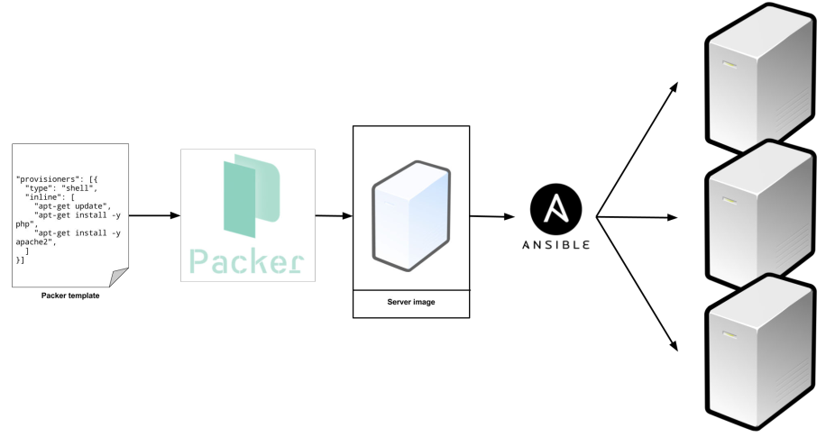
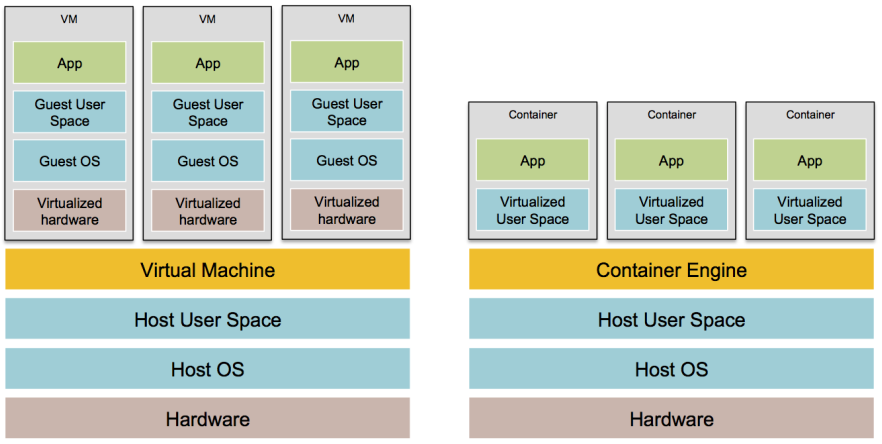
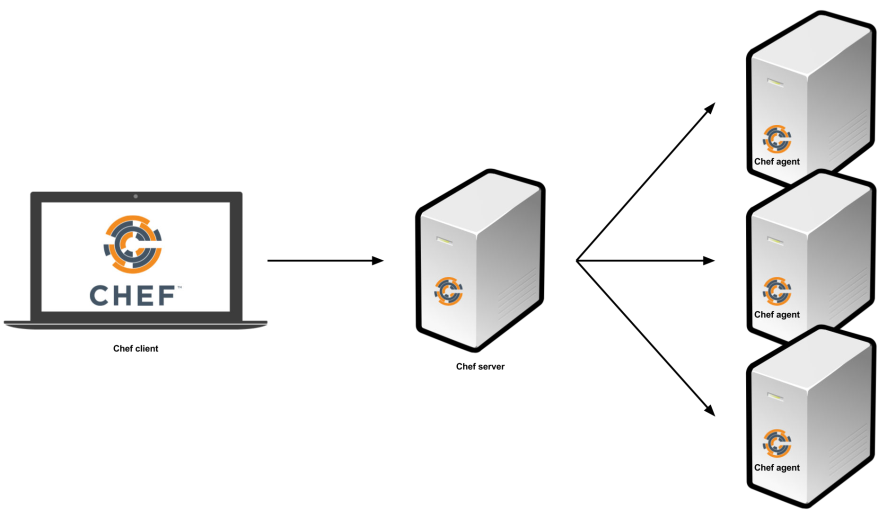

Terraform Up and Running
Table of Contents
- 1. Preface
- 2. Chapter 1. Why Terraform
- 3. Chapter 2. An Introduction to Terraform
- 4. Chapter 3. How to manage Terraform state
- 5. Chapter 4. How to create reusable infrastructure with Terraform modules
- 6. Chapter 5.
- 7. Chapter 6.
- 8. Links
1 Preface
Terraform is an open source tool to define infrastructure as code (IAC), and to deploy and manage that infrastructure across a variety of cloud providers. It's replacing not only manual sysadmin work, but also many older IAC tools such as Chef, Puppet, Ansible, SaltStack, and CloudFormation.
2 Chapter 1. Why Terraform
2.1 The rise of DevOps
Configuration drift: the problem when each server a subtly different configuration from all the others (snowflake servers).
2.2 What is infrastructure as code
- To treat all aspects of operations as software, even those that aspects that represent hardware.
- To manage almost everything in code, including servers, databases, networks, log files, application configuration, documentation, automated tests, deployment processes etc.
Four categories of IAC tools:
| Ad hoc script | Small, one-off tasks |
|---|---|
| Configuration management tool | Install and manage software on existing servers |
| Chef, Puppet, Ansible, SaltStack | |
| Server templating tool | Create server images to be deployed across multiple servers |
| Docker, Packer, Vagrant | |
| Orchestration tool | Create and provision servers and other resouces |
| Terraform, CloudFormation, OpenStack Heat |
2.2.1 Server templating tools
Instead of launching a bunch of servers and configuring them by running the same code on each one, the idea behind server templating tools is to create an image of a server that captures a fully self-contained "snapshot" of the operating system, the software, the files, and all other relevant details.
To deploy images across servers, some other IAC tool is still needed.

There are two categories of tools for working with images:
- Virtual Machines
- A virtual machine (VM) emulates an entire computer system, including the hardware. A hypervisor, such as VMWare, VirtualBox, or Parallels, is run to virtualize the underlying CPU, memory, hard drive, and networking. VM Image run on top of the hypervisor can only see the virtualized hardware, so it's fully isolated from the host machine and any other VM Images. The drawback is that all of this virtualization incurs a lot of overhead in terms of CPU usage, memory usage, and startup time. VM Images are defined as code using tools such as Packer and Vagrant.
- Containers
- A container emulates the user space of an operating system. A container engine, such as Docker or CoreOS rkt, is run to create isolated processes, memory, mount points, and networking. Container run on top of the container engine can only see its own isolated user space, so it cannot see the host machine or other containers. Since containers run directly on top of the host machine, the isolation is not as secure as with VMs, but there is virtually no CPU or memory overhead. Container Images are defined as code using tools such as Docker and CoreOs rkt.

Server templating is a key component of the shift to immutable infrastructure: once a server is deployed, you never make changes to it again. If update is needed, e.g. deploy a new version of application code, a new image is created from the server template and deployed on a new server.
2.2.2 Orchestration tools
Orchestration and server templating working together is a common pattern in immutable infrastructure.
2.3 How Terraform works
The terraform binary parses infrastructure code, translates it into a series of API calls to the cloud providers specified in the code, and makes those API calls as efficiently as possible on your behalf.
2.4 How Terraform compares to other infrastructure as code tools
2.4.1 Configuration management vs orchestration
Configuration management tools can typically do some degree of orchestration (e.g. deploy a server with Ansible) and orchestration tools can typically do some degree of configuration (e.g. run configuration scripts on each server provisioned with Terraform).
If server templating tool is used, the vast majority of configuration management needs are already taken care of. Once an image is created from a Dockerfile or Packer template, all that's left to do is provision the infrastructure for running those images. If server templating tools is not used, a good alternative is to use a configuration management and orchestration tool together. For example, use Terraform to provision servers and run Chef to configure each one.
2.4.2 Mutable infrastructure vs immutable infrastructure
Configuration management tools typically default to a mutable infrastructure paradigm. Updates to servers happen in-place, and as more updates are applied, each server builds up a unique history of changes, which leads to the same configuration drift problem that happens when manage servers manually.
With orchestration tool, servers are updated by deploying new images to new servers, and undeploy old servers. This approach reduces the likelihood of configuration drift bugs, makes it easier to know exactly the state of each server.
Downsides of immutable infrastructure:
- Rebuilding an image from a server template and redpeloying all servers for a trivial change can take a long time.
- Once a server is up and running, it'll start making changes on the hard drive and experiencing some degree of configuration drift, although this is mitigated if you deploy frequently.
2.4.3 Procedural language vs declarative language
Chef and Ansible encourage a procedural style where code specifies, step-by-step, how to to achieve some desired end state. Terraform and other orchestration tools encourage a more declarative style where code specifies the desired end state, and the IAC tool itself is responsible for figuring out how to achieve that state. Terraform will also be aware of any state it created in the past.
Downsides of procedural languages:
- Procedural code does not fully capture the state of the infrastructure. Reading through the Ansible templates above is not enough to know what's deployed. It also have to know the order in which those templates were applied.
- Procedural code limits reusability. It has to manually take into account the current state of the codebase.
Downsides of declarative languages:
- Without access to a full programming language, the expressive power is limited. Some types of infrastructure changes, such as a zero-downtime deployment, are hard to express in purely declarative terms.
- Without the ability to do "logic" (e.g. if-statements, loops), creating generic, reusable code can be tricky.
2.4.4 Client/server architecture vs client-only architecture
Chef, Puppet, SaltStack, CloudFormation, and Heat all use a client/server architecture. The client, which could be a web UI or a CLI tool, is used to issue commands. The commands go to a server, which is responsible for executing commands and storing the state of the system. To execute those commands, the server talks to agents, which must be running on every sever to configure.

The client-server architecture has some drawbacks:
- Need to install and run extra software.
- Need to deploy an extra server for configuration management.
- Need to to maintain, upgrade, backup, monitor, and restore the extra softwares and hardwares.
- Need to open ports for communication, and configure authentication, all of which increases surface area to attackers.
- Extra moving parts introduce a large number of new failure modes into the infrastructure.
Ansible, and Terraform, use a client-only architecture. Ansible client works by connecting directly to your servers over SSH. Terraform uses cloud provider APIs to provision infrastructure. While CloudFormation uses a client/server architecture, AWS handles all the server and agent details, so as an end user, you have an experience that feels like client-only.
2.5 Conclusion
| Type | Infrastructure | Language | Architecture | Maturity | |
|---|---|---|---|---|---|
| Chef | Config Management | Mutable | Procedural | Client/Server | High |
| Puppet | Config Management | Mutable | Declarative | Client/Server | High |
| Ansible | Config Management | Mutable | Procedural | Client-only | Medium |
| SaltStack | Config Management | Mutable | Declarative | Client/Server | Medium |
| CloudFormation | Orchestration | Immutable | Declarative | Client/Server | Medium |
| Terraform | Orchestration | Immutable | Declarative | Client-only | Low |
| Heat | Orchestration | Immutable | Declarative | Client/Server | Low |
3 Chapter 2. An Introduction to Terraform
3.1 Deploy a single web server
resource "aws_instance" "foo" { user_data = <<-EOF #!/bin/bash echo "Hello, World" > index.html nohup busybox httpd -f -p 8080 & EOF }
When one resource references another resource using interpolation syntax, an implicit dependency is created. Terraform parses these dependencies, builds a dependency graph from them, and uses that to automatically figure out in what order it should create resources. When Terraform walks your dependency tree, it will create as many resources in parallel as it can.
In Terraform, most changes to an EC2 Instance, other than metadata such as tags, actually create a completely new Instance.
3.2 Deploy a cluster of web servers
An ASG needs parameter availability_zones which specifies into which availability zones (AZs) the EC2 Instances should be deployed. It could be a hard-code the list of AZs, e.g. ["us-east-1a", "us-east-1b"], but each AWS account has access to a slightly different set of AZs, so a better option is to use the aws_availability_zones data source to fetch the AZs specific to the AWS account.
resource "aws_autoscaling_group" "foo" { availability_zones = ["${data.aws_availability_zones.all.names}"] }
4 Chapter 3. How to manage Terraform state
4.1 What is Terraform state
When using Terraform as a team, as soon as state file is shared, there is a problem: locking. If two team members are running Terraform at the same time, you may run into race conditions.
4.2 Shared storage for state files
Putting Terraform state files in version control is a bad idea because:
- It's easy to forget to pull down the latest changes before running Terraform or to push changes to version control after running Terraform.
- All data in Terraform state files is stored in plaintext, while certain Terraform resources need to store sensitive data, for example database username and password.
The best way to manage shared storage for state files is to use Terraform's built-in support for Remote State Storage.
4.3 Isolating state files
Instead of defning all environments in a single set of Terraform templates, you should define each environment in a separate set of templates, by putting the Terraform templates for each environment into a separate folder. Terraform uses a separate state file for each folder.
Take the isolation concept beyond environments and down to the "component" level, where a component is a coherent set of resources that are typically deployed together. For example, the basic network topology of infrastructure: VPC and associated subnets, routing rules, VPNs, and network ACLs, these probably only change once every few months, while new versions of web server may be deployed multiple times per day.
4.4 File layout
root
|
|- global
| |- iam
| +- s3
|
|- stage
| |- vpc
| |- services
| | |- frontend
| | +- backend
| | |- main.tf
| | |- vars.tf
| | +- outputs.tf
| +- datastore
| |- mysql
| +- redis
|
|- prod
| |- vpc
| |- services
| | |- frontend
| | +- backend
| +- datastore
| |- mysql
| +- redis
|
+- mgmt
|- vpc
+- services
|- bastion_host.tf
+- jenkins.tf
Splitting components into separate folders prevents breaking multiple components in one command, but it also prevents creating all the components in one command. It's also harder to use resource dependencies, for example, application component access attributes of the database component. Terraform offers read-only state for this purpose.
4.5 Read-only state
Output parameters of one resource, e.g. IP address and port numbers of DB instance, can be set as environment variables or written to a config file so they could be used by other resources.
4.6 Conclusion
When writing code for a typical app, most bugs are relatively minor and only break a small part of a single app. When writing code that controls infrastructure, bugs tend to be more severe, as they can break all apps at once. More safety mechanisms should be incluced when working on IAC.
5 Chapter 4. How to create reusable infrastructure with Terraform modules
5.1 Inline blocks
If not specified otherwise, all the resources deploy into the same VPC. That means a server in the staging environment can talk to a server in the production environment and vice-versa. In real-world usage, running both environments in one VPC opens up to two risks:
- A mistake in one environment could affect the other.
- If an attacker gets access to one environment, they also have access to the other.
Therefore, outside of simple examples and experiments, you should run each environment in a separate VPC.
5.2 Versioned modules
If all environments are pointing to the same module folder, then a change in the module folder will affect all environments on the very next deployment. This sort of coupling makes it harder to test out a change in staging without affecting prod. A better approach is to create versioned modules so that staging uses one version and prod uses a different version.
The easiest way to create a versioned module is to put the code for the module in a separate Git repository and to set the source parameter to that repository's URL.
6 Chapter 5.
TODO
7 Chapter 6.
TODO